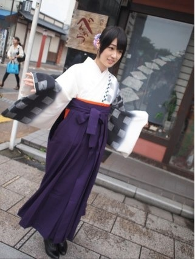
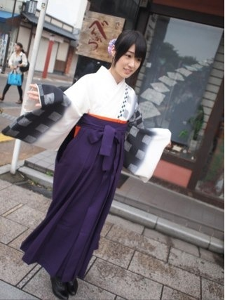

2012/0722Sun（´-`）.｡oO(かずみん×81
こんにちは(^-^)/
いつも応援ありがとうございます！
コメントを見ていたら
ガジは方言だと思ってた方が
沢山いらっしゃいましたね(*^_^*)
あと浪漫の感想を書いていただき
ありがとうございました(^^)
残念ながら放送されていない
地域の方も沢山いらっしゃったので、
今日は写真載せますね♪
自撮り...やっぱり上手く
撮れないぞ(>_<)

全身はこんな感じでした♪
------
そして今日載せる1枚はこちら！
可愛い〜\(//∇//)\
今週お誕生日だったゆったんです(*^^*)
いつもお誕生日のメンバーがいるたびに
『カメラ持ってくればよかった〜』
と後悔していたので、今回は
持ってこれてよかった(^-^)
荷物が多い日はなかなか
持ち運べないんですよ(T ^ T)
あ、今回はまあやが助手復活です！笑
『OK,いいね〜！』
を常に言ってくれました♪笑
ありがとう！
これからも
みんなの可愛い表情を
沢山載せたいのだけれど、
推し変されちゃいそうで
怖いなぁ(>_<)
でもみなさん優しいので
信じてます...！
できるだけ頑張って
メンバーの写真載せますね♪
--------
続々と3rdの曲が出来上がっていて、
聞いているのですが
思ったこと...。
いや、前から思っていたこと...。
自分しゃべる声と歌う時じゃ
声違う(⌒-⌒;
別に意識してるわけでもないのですが
自然と変わります。
どっちが本当の声かと聞かれたら
どっちも本当の声です！
実は
曲ふりや合図を私が言う時は
しっかりしなければならないので
メンバーから
『歌う時の声でやって！』
と言われます(>_<)笑
ただこの声は喋りで使うと
1分くらいしか持ちません(´Д` )
それ以上経つともやもやしてきて
普段の声に戻ってしまいます。
...と言うどうでもいい
高山プチ情報でした！笑
やっぱり私は
とにかく歌うことが大好きです(*^^*)
--------
今日は乃木どこですね！
私は明日早いのでリアルタイムでは
見れないのですが、
感想待ってますね(^-^)/
キャンプ楽しかったなぁ( ´ ▽ ` )
-------
それでは、今日はこの辺で(#^.^#)
明日からまた一週間が始まりますが
一緒にガジ頑張りましょう！
おやすみなさい...☆
いつも応援ありがとうございます！
コメントを見ていたら
ガジは方言だと思ってた方が
沢山いらっしゃいましたね(*^_^*)
あと浪漫の感想を書いていただき
ありがとうございました(^^)
残念ながら放送されていない
地域の方も沢山いらっしゃったので、
今日は写真載せますね♪
自撮り...やっぱり上手く
撮れないぞ(>_<)

全身はこんな感じでした♪
------
そして今日載せる1枚はこちら！
可愛い〜\(//∇//)\
今週お誕生日だったゆったんです(*^^*)
いつもお誕生日のメンバーがいるたびに
『カメラ持ってくればよかった〜』
と後悔していたので、今回は
持ってこれてよかった(^-^)
荷物が多い日はなかなか
持ち運べないんですよ(T ^ T)
あ、今回はまあやが助手復活です！笑
『OK,いいね〜！』
を常に言ってくれました♪笑
ありがとう！
これからも
みんなの可愛い表情を
沢山載せたいのだけれど、
推し変されちゃいそうで
怖いなぁ(>_<)
でもみなさん優しいので
信じてます...！
できるだけ頑張って
メンバーの写真載せますね♪
--------
続々と3rdの曲が出来上がっていて、
聞いているのですが
思ったこと...。
いや、前から思っていたこと...。
自分しゃべる声と歌う時じゃ
声違う(⌒-⌒;
別に意識してるわけでもないのですが
自然と変わります。
どっちが本当の声かと聞かれたら
どっちも本当の声です！
実は
曲ふりや合図を私が言う時は
しっかりしなければならないので
メンバーから
『歌う時の声でやって！』
と言われます(>_<)笑
ただこの声は喋りで使うと
1分くらいしか持ちません(´Д` )
それ以上経つともやもやしてきて
普段の声に戻ってしまいます。
...と言うどうでもいい
高山プチ情報でした！笑
やっぱり私は
とにかく歌うことが大好きです(*^^*)
--------
今日は乃木どこですね！
私は明日早いのでリアルタイムでは
見れないのですが、
感想待ってますね(^-^)/
キャンプ楽しかったなぁ( ´ ▽ ` )
-------
それでは、今日はこの辺で(#^.^#)
明日からまた一週間が始まりますが
一緒にガジ頑張りましょう！
おやすみなさい...☆
2012/07/22 22:36


コメント(407)
かずみんのしゃべり方やっぱ好きだわー
乃木どこさっき見たよー
魚に頑張ってなれてね？(笑)
来週も楽しみにしてるよー
あぁーーー 俺もキャンプ行きたいーーー
かずみんは魚は苦手なんですか？
かずみんは特徴のある声でいいと思うよ♪笑
おつかれ～！！
かっずみーーーん
─=≡Σ((( つ•̀ω•́)つ
乃木どこみたぞ！
>* ))))><
いや～～ーーーー！！！
って叫びすぎ！！笑
来週も楽しみ！！
てか、ゆったんの写真かわいすぎる！(*^_^*)
眠いからまた明日コメントするね！
明日も1日ガジ頑張るぞ！
楽しそーでしたよ！
コメント20回目
( ´艸｀)
乃木どこみたよ～
魚みて叫んだのわらった(笑)
乃木坂浪漫ゎ鳥のフンがwww
自分もカメラつかうからわかる～
けっこう荷物になるよ～
つねに持ち歩くわけにわいかないし
でも写真とりたいよね
あしたもガジがんばる
おやすみー
魚苦手とか意外だったわ。
カズミン( ｀.∀´）y-
タンブルじしぃ頑張ってますねｗｗ
カズミンはやっぱり脚出した方がいいな＼(^∀^)／
乃木坂どこー面白かった
ヤマメ♪ヤマメ♪ｗｗ
バイバイ
ゆったん満面の笑みやな！！
俺は普段の声の方が好きだな～♪( ´▽｀)
さかな取れてよかったねん！
実は!!
22日で二十歳になりましたーo(^o^)o
二十歳になった実感が無いけどね…。
「乃木どこ?」見ました!!
やっぱり、魚は素手で触れないんだね(笑)!!
「乃木坂浪漫」も見ました!!
かずみん、フンだけに運あるやん(笑)!!
へばっまずな(^-^)/~~
かずみーん(*^^*)
自撮り上手くなってるよ(*^^*)
待ち受け決定(照)
浪漫の時のあれ、だいじょうぶだった？？笑
なんか運悪いね(^^;
ん？ついてるってことかな(笑)←
ゆったん誕生日おめ！！
直接言いたいなぁ(^^;
たしかにかずみん声違うね(笑)
どっちも好きだけどね(*^^*)照
いつも笑ってるからじゃない？？(^-^;
明日からもガジ頑張ろうo(^o^)o
それじゃあこの辺で！
今日はお疲れ様(*^^*)
明日も頑張ろう
愛羅武勇
してるよ！
仕事がんばってね♪
(´・ω・`)
乃木どこ？わずからのテスト勉強なうでし！
今日はオールの予感でし！
でも明日のテストは4限と5限やし
でもでも1限普通にサッカーの授業があること…やばたん
テストの時間相当眠いだろうな笑
明日はメガシャキ買って大学行きます
それでは明日もがんばりまいやん！(o^_^o)
さかちょん
あ！！─=≡Σ((( つ•̀ω•́)つ
言い忘れてたけど、
かずみんしか！！！
よし、これで寝れる(-'＿'‐)ふぅ
キャンプ楽しそー！！
かずみん、意外と魚つかめないんだねぇ
みなみが意外とつかめちゃうなんてオモロ
今度、設楽さんにあったら「秩父のカナリア」と呼んであげてください
読ませてもらってるよ
いつも、どんなカメラ持ち歩いてるの
がさばるような大きいやつ？
かずみんのカメラの腕前を見習いたいので
上手に撮るコツなどあったら教えて・・・
歌ってる時と話している時のかずみんの声は
そんなに違うの？
かずみん こんばんは(￣▽￣)
浪漫は放送ないけどチェックしたよぉ！
かずみん の着物キレイやった\(//∇//)\
でも肩に…（笑
まぁウンがあったということで（笑
ゆったん の最高の笑顔(((o(*ﾟ▽ﾟ*)o)))
かずみん の写真は素敵な表情撮ってて惹かれるね♪
今日は乃木どこ！
でも乃木どこも放送ない(~_~;)
やけどちゃんとチェックするけんね！
『涙がまだ悲しみだった頃』も
公式サイトでチェックせねば！(◎_◎;)
歌ってるときも素のときも
どっちの かずみん にも違った魅力があるよぉ(((o(*ﾟ▽ﾟ*)o)))
明日からガジがんばってね！
自分もテストに向けてがんばるぜぜぜぜぜーい！
初コメ(｀･∀･´)
話し声と歌声違う人って結構いるよね！
長崎は乃木どこ映らないので長崎来てからまともな見れてない…泣
大分にいたときは映ってたんで2011年10月2日の第1回放送から見てたよ～＼(^o^)／
大学はもうすぐテストだけど乃木坂メンバーも頑張ってるから俺も頑張るよ！！！
それじゃおやすみー(つA`)
また次週もみるぜ(^^)d
これで今週もガンバレそうや♪
木曜からテストがあって死にそうです(T-T)
ノー勉でやり過ごせないから明日から詰め込みまくる(´Д｀)
確かに違うよね！
でも俺はどっちもかずみさんらしくて好きやけどな～
他のメンバーの写真貼っても推し変はしません←全力で誓う(￣^￣)
プチ高山情報をバンバン頼みますね～
さっさんより
でも写メを見る限りめっちゃ可愛いと思うねんけど♪
ってか自撮り下手じゃないでしょ(^^)
ガジはやっぱり他の方も方言と思ったんやぁー
だってあんま噛んだ感じせんかったもん!!
さすがかずみん即興でネタを作るとは恐るべし!!
かずみんの歌声確かに喋り声とは全然違うなぁ♪
偶然のかずみんが歌ってるとこめっちゃ好きやで!!
僕も歌めっちゃ好きやからテスト終わったらカラオケ行こう♪
また更新待ってるよ☆
一実浪漫みました
袴姿に見とれていたら…最後に落ちが付くとは…
かずみん持ってるねぇ
乃木どこ？もみたよー
魚苦手？すごく可愛かったです
ゆったんいい感じで撮れてるね
自分も買うかもしれないので
カメラを買ったらお話しましょー
かずみんばんわ(*^o^*)
そろそろ寝ますかね～
浪漫まだみてないや…
一週間分の浪漫みなきゃ！
ゆったんおめでとうだね！
ゆったんのこの笑顔好きだわ～
くしゃってしてるのが可愛い
しゃべる時と歌うときって
声違うもんじゃないの？
ずっとそうだと思ってた
歌わないからわかんないけど
声は変えようとするのキツイからね
あと大学3日行ったら夏休み！
そのうち2日はテストだけど
でわでわこの辺で@(・●・)@
確かに声が違う(*^^*)あと表情も(笑)
かずみんらしいかなあ♪
魚苦手なんかあ？
今回PVや特典楽しみにしてます！
乃木どこ見たよぉ(^O^)
魚の掴み取りのかずみんめっちゃオモシロかった!!
＆
ヤバイくらい可愛いかったよ＼＾o＾／
魚そんなに苦手なの？
来週の料理も気になるから絶対にみるよ(ノ＞＜)ノ
写真のはかまかずみんに似合っとるなぁ♪
写真ありがとな(^O^)
またお互い一週間頑張ろうな(＾O)＝3
来週は 料理作りやん
どうなるか楽しみやわ♪
ほんで 個別では 歌を歌う声で お願いしますね(^O^)/
やっぱり師匠と助手の作品は違いますね。
これからも楽しみにしてます！
キャンプ楽しそうだったねー
キャンプ行きたくなったよ。
山女魚はおいしいよねー
昔は釣りによく行ったな～と物思いにふけってしまった。
来週も楽しみ。
したらね～
かずみん！！！！！
一言言いたい！
ゆったんの、天使のような笑顔を撮ってくれてありがとう！！
ほんと素敵な絵だ\(//∇//)\
ナイス！カメラマンさん！！それと助手さん！！
ほんとありがとうね(*^_^*)
これからも高山カメラマンの色々な写真楽しみにしてます！
では明日もお仕事＆レッスン頑張ってください！ふぁいとーo(^▽^)o
そしてゆったんのいい笑顔撮れてるよ!さすがかずみん(*^▽^*)
来週の乃木どこも楽しみだぜぜぜぜぜーい
今週の「乃木どこ」観ましたよ！
さかなのつかみ取りは女の子には苦手だったかな？
そんな中「まいやん」がガジ頑張りを決めていましたね
来週のかずみんに超絶期待していますよ
それではワシも仕事をガジ頑張るからね～
遅くなったけど浪漫観たよ。…でも最後の鳥？のフンで本編の感想がぶっ飛んだ！かずみん持ってる！
篠山紀信…じゃなくて高山紀信の次の作品期待してるよ。推し変が心配ならメンバーの変顔ハンターになるのはどうかな？(笑)
声の違いも良い意味での
ギャップと考えたらいいんじゃない？「偶然を言い訳にして」のかずみんの歌声も、怪談をボソボソ話すかずみんも両方好きだよ♪
ゆったん嬉しそうだね♪
それだけゆったんにとって最高の
誕生日だったってことだね。
乃木坂ってどこ見たよ♪
魚つかみどりなかなか苦戦してたね(汗)
かずみん面白かったよ(笑)
それじゃあ今日も一日頑張ろう！！！！！！！
おれは大阪やから浪漫は見れんけどYouTubeとかでみてる(ρ°∩°)
今日もバッチリ乃木どこみたよ☆彡
魚にめっちゃビビってたねｗ
じゃ、おやすみ(*'-')ノ~。.*・゜
明日もガジ頑張りましょうｗ
.
(せーき君の伝言係)
自撮りめちゃうまく
撮れてるよ?(^^)
でれかわいい!!!!
他のメンバーの写真も
楽しみにしてます♪
歌ってる時の声と
話してる時の声の違い
めちゃわかる!!!
あれなんでだろうね(^^;)
意識は別にしてないしね!
乃木どこ今帰ってきて
見れてないから録画したのを見ます♪?θ(^0^ )
今日もがんばろう!!!
８０にコメントしたのでみてください。
今日も一日お疲れ様でした。また明日っ(+。+)zzz（２回目）
乃木坂浪漫みたよ～
まさか鳥に糞されるとは・・・ｗ
まだ頭にされなくて良かったｗｗｗ
推し変・・・怖い言葉だｗ
推しは増えても変えはしないからご安心をｗ
乃木どこ？観たよ。
意外と魚触れないんだ。
コワイ！コワイ！よぉーって！
ああいうの平気そうな感じだったんだけど(笑)
かわいいね！
来週がキャンプ料理なのね。
まぁそこでかずみんの本領発揮なのね！
期待してます。
キャンプっていいねぇー。
10年位キャンプしてないよ。
どんだけぇー！！
ばいなら！
p(^^)q
自撮りは別に悪くないと思うよ♪
『自撮りOK～、かずみんいいね～♪』（笑）
浪漫の時の全身写真、何かきょどってる感じがして3枚の写真の中でこれが１番良いわ！（笑）
歌ってる時と喋ってる時の声は本当に違うと思う。
乃木どこは録画したの後で見るよ♪
明日からもお互いにガジ頑張ろう(^^)v
最近お気に入りの顔文字勝手に貼っとくわ！（笑）
それじゃあまたね
ε=ε=┏( ・_・)┛
ひょっとこのペーちゃんです(ゝω・´★)
今日も一日お疲れ様
今日も仕事かな⁇
毎日、大変やねー
体調は大丈夫⁇
無理したらあかんよ～
今日も乃木どこ⁇観たよー
良かった良かったよー(´・ω・｀)
アスレチック競争たか特に(笑)
頑張ってたのが伝わってきた(笑)
かずみん
歌ってる時の声と普段の声違うよね(笑)
前から思ってた(笑)(笑)
そうやんな
へぇー
一分しかもたないんや(笑)
次は来年まて握手会行けないけど…
ひょっとこのペーちゃんを覚えといてよー
前向きに受験勉強頑張るわー
じゃあ
明日も一日頑張って( ^_^)/~~~
浪漫のコメント書いたけど、削られちゃってたからまた書くね！！
やっぱり、かずみん本当和服似合ってたよ(ﾟ▽ﾟ*)♪
そんでもって撮影中に鳥にふんをされるという〜(笑)(;･∀･)
やっぱりかずみんは、持ってるね(笑)！！
そんなかずみんが大好きだぜぜぜぜぜ〜い☆^(*≧口≦)=3
ゆったんの笑顔めっちゃ癒される〜(>∀▽<)ﾉ♪
かずみん普段の声と、歌う声違うよね〜(笑)
どっちの声も本当にグット！！
でも一つ言えることは、かずみん歌上手すぎ〜Σ(●ﾟ∀ﾟ)ﾉﾉ
本当にかずみんの歌声一番好き！！
乃木どこ見たよ！！
キャンプ最高(ﾉ∀≦｡)ﾉぷぷ-ｯ笑
かずみん、魚怖いんだね〜(笑)(≧∀´##)
ではでは、明日もお仕事頑張ってね〜！！
応援してるぜぜぜぜぜ〜い！！！
歌うときの声をしゃべりで使うと１分持たないって…（笑）
そんなおちゃめなかずみんもガジ大好きですよ（笑）
今日は乃木どこでしたね～！！
まいやんの差し出したヤマメに、
絶叫しているかずみん、おもしろかったです（すいません^ ^;）。
僕が思うに、かずみんとまいやんのコンビは結構いいコンビなんじゃないかなあ（笑）
今日の放送でもかずみんガジ可愛くて、
かずみんにばかり目がいっちゃってたので、
録画を見返して全体をよく見なければ！！
来週もキャンプの続きが見られるということで、
今から楽しみです！！
今週はまた暑くなるそうですから、
身体に気をつけて、ガジ頑張ってくださいね☆
いつも応援していますよ！！
自撮りめっちゃ可愛いでw
ゆったんの笑顔もいいね
これからもどんどん写真よろしくね(笑)
乃木どこ見たで
アスレチックとかヤマメつかみとかめっちゃ楽しそうやんw
キャンプいきたいわー(笑)
ほなねﾉｼ
今日も１日お疲れ様。
ブログ更新ありがとう♪
乃木どこ？見たで！
まいやんチーム最下位o(T□T)o
そのせいでヤマメの掴み取りとはお疲れ様でした。
俺も魚の掴み取りしたことあるけど
最初はなかなか勇気がいるよな？
あの叫び可愛かった(^^)
代わりにやってあげたいって思った！
来週も楽しみやわ！
さゆりんクッキングまた見れるとはヘ(≧▽≦ヘ)♪
木曜日に友達が誕生日パーリィを開いてくれてんけど
そのなかでケーキも作ってくれてん！
友達から手作りケーキとか初めてやしめっちゃ嬉しかった(’-’*)♪
あとお好み焼き食べ放題も行ったし
最高の誕生日パーリィやったヘ(≧▽≦ヘ)♪
俺はかずみんの普段の声も歌ってる時の声も大好きやで！
かずみんから推し変なんかしませんよ(〃^ー^〃)
明日からガジ頑張りましょう。
俺は勉強
かずみんはお仕事かな？
では
おやすみ(-.-)Zzz・・・・
そうそう質問
走れ！bicycleのフリ覚えたいねんけど
アドバイスとかってある？
ゆったんの写真の表情も良すぎ！！プロめ（笑）！！！
乃木どこ観ましたよ～！！
かずみんの絶叫・・・すごかったですね（笑）
そんなに魚怖かったですか！？
明日からもガジ頑張りましょう！！！
おくれましたが、ろまん見たよ♪
乃木どこもリアルタイムで見たよ♪
そのなかでの自分的ベストオブかずみん(笑)は、
・まいやんにヤマメをみせられて、「ギャー！！」ってっいとるとき(^_^)v
いやー、かわいかった！
でも、魚が苦手なのは意外だった。笑
俺も、歌うと声が違うって言われる。。。
そして、その声でしゃべればいいのにとも。。笑
かずみんのしゃべる声とか、しゃべり方とか、すごい好きじゃけー、ぜひとも変えずに、そのままでお願いします☆m(__)m
乃木どこ？見たよ。
かずみん、魚普通に触れると思っていたから何か意外だった。次回も欠かさず見ます！
体調に気をつけてお仕事頑張ってください。
乃木どこ観ました!!
やまめ!?でしたっけ！
まいやんの持ってるのを見て叫んでたね！まあ、可愛かったけど。
かずみんのブログ盛りだくさんだね！
たくさんコメントしたいけど、朝早いので、このへんで！
お休みなさい!!
魚つかむところとかね。
乃木坂ブログにコメント書きながら、乃木どこ？を何回か観るのは至福の時間だな。
(ゝω・´★)
乃木坂浪漫良かったよ♪
べっぴんさんやったわ(*^^*)
確かに喋った時と歌ってる時の声違うね
どっちも好きやけど♪
歌も上手いし喋りも面白いね(*≧∀≦*)
乃木どこでかずみんが喋る時は常ににやけながら見てるよ(笑)
今日も乃木どこ面白かったわぁ♪
生きた魚怖いのかな？
では明日もガジ頑張っていきましょうヾ(´▽｀*)ゝ
コメントする